Draft v4 working paper
Internal Family Systems (IFS) is a psychotherapeutic model in which the psyche is understood as containing multiple “parts” — sub-personalities with distinct beliefs, emotions, and behavioral tendencies — organized around a core Self. Despite growing clinical adoption, IFS lacks a formal computational framework. This paper proposes one, using the tools of active inference. We model parts as high-precision local control models within a single generative model: learned bundles of priors over self-state, world-state, policy, and expected outcome, formed under conditions of overwhelm and low control. The key variable is Self-energy — a composite capacity involving autonomic-social regulation and metacognitive depth — which determines whether part activation produces blending (the part captures inference; its beliefs feel like identity) or witnessing (the part remains active while present-context evidence stays online; its beliefs can be held as object). The model predicts that only the witnessing regime permits durable revision of outdated part priors, with self-state shifting before threat meaning and protective policy. The model makes testable predictions about the conditions for therapeutic change, the temporal ordering of belief revision, and the differential generalization of witnessing versus exposure-based approaches.
Sometimes “I am afraid.” Sometimes “a part of me is afraid.” Same activation, different relationship.
This paper asks what determines which — and why only the second permits lasting change.
The question is not unique to Internal Family Systems therapy, but IFS brings it into sharp focus. Where many therapies target the intensity of distress, IFS targets the relationship between the person and the activated content. The distinctive IFS move is not to eliminate the fear but to change whether the fear is experienced as identity (“I am afraid”) or as something that can be observed and related to (“a part of me is afraid, and I can be with it”).
The claim of this paper is not that IFS outperforms exposure or other evidence-based treatments in every context. It is that IFS targets a different variable: not activation alone, but the relation of the system to activated part-content. This variable — which we formalize as Self-energy — determines whether activation produces mere repetition or an opportunity for revision.
We propose a computational account using the framework of active inference. Parts are modeled as high-precision local control models within a single generative model: learned bundles of priors that, when activated, organize perception, affect, and action around a coherent interpretation of the current situation. Self-energy is modeled as a composite capacity involving autonomic-social regulation and metacognitive depth, operationalized in the simulations by a scalar proxy. The model manipulates only three quantities — part-bundle prior precision, present-context evidence precision, and Self-energy — and from these derives the core IFS phenomena: blending, witnessing, unburdening, protector dynamics, and polarization.
The paper proceeds as follows. Section 2 distinguishes the clinical ontology of IFS (which treats parts as intentional agents) from the computational ontology proposed here (which treats them as precision-modulating patterns). Section 3 introduces the minimal active inference toolkit. Sections 4–6 define parts, explain how they form, and explain how they persist. Section 7 formalizes Self and Self-energy. Sections 8–9 present the paper’s central argument: that Self-energy determines whether activation produces blending or witnessing, and that only witnessing permits lasting change. Sections 10–11 address protector dynamics and multi-part polarization. Sections 12–13 describe simulations testing the theory’s predictions. Section 14 discusses implications and limitations.
Any computational account of IFS must navigate a tension between two ways of talking about parts. In clinical practice, parts are engaged as if they have intentions, fears, trust conditions, and relational needs. The therapist speaks to parts, asks what they need, negotiates with them, and respects their autonomy. This stance is not merely metaphorical — it is part of the mechanism of change. In IFS, parts are approached with curiosity and compassion because that relational stance is treated as therapeutically necessary in ways that analysis or override are not.
In the computational model proposed here, parts are not separate sub-agents with their own generative models. They are learned patterns of precision allocation within a single generative model that, when activated, shape both perception and action. Self is not a hidden homunculus observing the parts; it is a regime of the generative model characterized by uncaptured inference. Self-energy is the formal variable that indexes which regime obtains.
These two ontologies are not in conflict. They operate at different levels of description:
The clinical ontology is preserved in this paper as the source of phenomenological grounding. When we say “the part believes it is six years old,” we mean that the part-bundle includes a self-state prior corresponding to a developmental state, and that this prior, when active, organizes experience as though the person were that age. The computational account specifies the mechanism; the clinical language preserves the phenomenology.
Some clinical constructs — especially protector negotiation, self-like parts, and the therapist’s relational contribution — are only minimally formalized in this version and are treated as future elaborations rather than fully modeled elements.
Table 1 provides a map from IFS phenomena to their computational interpretation in this model.
| Phenomenon | How it falls out |
|---|---|
| Parts | Learned local control models bundling self-state, world-state, policy, and expected outcome; formed under overwhelm and stabilized by high prior precision |
| Blending | The part captures inference, present context goes functionally offline, and its beliefs feel like me |
| Witnessing | The same part stays active while present evidence stays online too; its beliefs feel like something I am with |
| Self-energy | The variable that determines which relation holds; theoretically composite of autonomic-social safety and metacognitive depth, modeled in v1 by a scalar proxy |
| Outdated beliefs | Priors that were adaptive under earlier conditions but are anachronistic now; capture prevents the system from fully registering the mismatch |
| Age regression | The active bundle carries a developmental self-state — “I am six” is modeled as a live prior, not reduced to metaphor |
| 8 C’s of Self | The phenomenological signature of sufficiently uncaptured inference under high Self-energy, not yet a fully derived theorem and not evidence for a separate inner homunculus |
| Protectors | Policy priors and access-control tendencies that prevent destabilizing exile takeover; in practice they also have trust conditions for stepping back, though v1 formalizes only the minimal gatekeeping function |
| Polarization | Two or more part-bundles competing for takeover, each treating the other’s preferred policy as dangerous |
| Exposure vs IFS | Exposure: corrective evidence under activation with limited Self-energy support. Witnessing: corrective evidence under activation while context remains online |
| Unburdening | Durable revision of the part’s upstream priors, made possible because context was maintained during activation |
| Dissociation vs Self-led calm | Both may look quiet. Dissociation = present evidence functionally turned down. Self-ledness = present evidence strongly online with no part dominating |
| Why change generalizes | Witnessing revises “who I am here” before “what is dangerous,” allowing upstream change to cascade downstream when H1 holds |
This section introduces only the formal machinery needed for this paper. Active inference is a broad framework; we use a deliberately minimal subset.
A generative model is an internal model of the causal structure of the world. It specifies how hidden states generate observations and how actions influence state transitions. The system uses this model to infer what is happening (perception), decide what to do (action), and update its beliefs over time (learning).
In the discrete-state-space formulation used here, the generative model specifies:
Precision is the inverse variance of a probability distribution — a measure of how concentrated or confident a belief is. In active inference, precision serves as a confidence weighting: it determines how much influence a given source of information has on inference.
For non-technical readers, precision can be read as how much the system trusts a given source of information in determining what is true and what action is needed. High precision on a signal means “trust this signal strongly.” Low precision means “this signal is uncertain; weight it lightly.”
Precision is the central formal tool in this paper. The core phenomena — blending, witnessing, persistence, and revision — are all explained through the interplay of precisions on different sources of information.
This paper manipulates only three quantities:
All other precisions — on state transitions, on the mapping from states to observations, on policy priors for non-part-related actions — are held fixed in the core model. This is a deliberate simplification. A more complete model would account for the full precision landscape. The present model aims to show that the core IFS phenomena can be derived from the interplay of these three quantities alone.
A part, in the computational framework proposed here, is a learned local control model: a bundle of associated priors over self-state, world-state, policy, and expected outcome that, when activated, organizes inference and action around a coherent interpretation of the current situation.
Consider a concrete example. A person who was attacked by a dog at age six may carry a part whose bundle includes:
These priors are not stored as a list. They are a coordinated pattern of precision allocation that, when activated, causes the system to perceive, feel, and act as though the original conditions still obtain. The priors are mutually reinforcing: helplessness makes the dog seem more dangerous, danger confirms the need to avoid, and successful avoidance confirms that the strategy was correct.
Parts feel coherent because they are coherent — they are bundles that formed together under specific conditions and activate together. They feel purposeful because their policy components generate systematic, goal-directed behavior. And they feel like identity rather than content because, during activation, their precision is high enough to dominate inference. When the part’s priors capture the system, there is no standpoint outside the part from which to observe it. The beliefs are not experienced as “my part thinks dogs are dangerous”; they are experienced as “dogs are dangerous.”
In clinical practice, IFS clinicians often encounter exiles and protectors as distinct parts with distinct identities — each with its own history, its own emotional signature, its own characteristic behaviors. The present model captures the minimal computational unit that can underwrite that phenomenology: a bundle of associated priors with high enough precision to organize experience when activated. The model remains agnostic about whether all clinically distinct parts map one-to-one onto separate formal bundles. A single bundle may underlie what clinicians experience as several related parts, or what feels like one part may involve multiple overlapping bundles. The formalism does not depend on resolving this question.
Parts form under conditions of overwhelm and low perceived control. This section describes the formation mechanism without invoking literal structural rewiring — consistent with the paper’s precision-first commitment.
Part formation is compression under overwhelm. When prediction error exceeds the system’s capacity for orderly updating — because the discrepancy is too large, too rapid, or too sustained — the system narrows. Attention contracts. The action repertoire shrinks. A single local solution that reliably reduces acute free energy gets consolidated with high precision.
The critical claim is that high threat alone is not enough. A frightening experience in which the person retains a sense of agency — can fight, flee effectively, call for help, or otherwise influence the outcome — may be distressing without being part-forming. The person processes the threat, updates their model, and integrates the experience into their ongoing narrative.
Part formation requires high threat plus low perceived control. When the system is both overwhelmed and unable to act effectively, the conditions for compression are met:
The result is a rigid, high-precision bundle: the age at which it happened, the capabilities available at that age, the world as it appeared from that position, the action that worked. These priors are locked in with extreme precision because they were formed under extreme conditions.
This formation account has two important implications:
Not all frightening events form parts. A child who encounters a dog and is scared but can run to a parent, seek comfort, and process the experience may be distressed but will not form a part. The threat was real, but perceived control — in this case, access to a regulating other — was available. The experience is integrated, not compressed.
Neglect can be part-forming even without acute trauma. Chronic low control under moderate threat — being consistently unable to influence outcomes, lacking access to regulating others, living in an environment where one’s needs are systematically unmet — can produce the same formation dynamics without any single overwhelming event. The compression happens slowly, through repeated exposure to the conjunction of threat and helplessness.
The model predicts that the degree of helplessness during formation should scale subsequent bundle rigidity. More severe low-control conditions — less agency, fewer resources, younger developmental age — should produce more treatment-resistant prior bundles. This is testable: parts formed during early childhood trauma with no available caregiver should, on average, require more sustained witnessing to revise than parts formed during adolescent experiences where some agency was available.
This section motivates Appendix A, which provides a simulation of part formation under varying conditions of controllability.
Once formed, parts can persist for decades — remaining rigid, recurrent, and functionally unchanged despite years of experience that contradicts their beliefs. A forty-year-old who was attacked by a dog at age six may still experience terror upon encountering a friendly dog, may still feel six years old during the experience, and may still avoid dogs as though avoidance were the only safe response. This section explains how.
The present model treats persistence as functional isolation produced by precision and sampling, not necessarily literal structural disconnection.
A part persists because three mechanisms work together:
High prior precision. The part’s beliefs were formed under extreme conditions and carry correspondingly extreme precision. Incoming evidence that contradicts the part (“the dog is friendly,” “you are an adult,” “you are safe”) is discounted because the prior overwhelms the likelihood. The evidence is present but computationally ineffective.
Underweighting of context evidence. During part activation, the effective precision on present-context evidence drops (low λctxeff). The system’s assessment of the current situation is dominated by the part’s stored assessment of the original situation. The forty-year-old’s context — their adult body, their capability, the friendliness of the dog — fails to register with enough weight to shift the posterior.
Avoidant sampling. The part’s policy priors favor avoidance, which prevents the system from encountering the corrective evidence that could, over time, erode the prior. If the person avoids dogs, they never accumulate the safe-dog experiences that would gradually reduce the precision of the danger prior. Avoidance is self-maintaining: it prevents the disconfirmation that would make avoidance unnecessary.
It is important to distinguish two accounts of why parts fail to update:
Functional isolation (this paper’s primary account): The part’s prior precision is so high that incoming evidence is discounted. The connections between the part and context exist in principle — the channels are available — but they are chronically underweighted. Evidence arrives but has negligible influence.
Structural isolation (Chamberlin’s graph-topological account): The part occupies a disconnected subgraph. No edges connect the part’s belief nodes to context-bearing nodes. Evidence literally cannot reach the part because the message-passing pathways do not exist.
These accounts generate different empirical predictions. Functional isolation predicts that slow updating can still occur under repeated safe sampling — if a person encounters enough friendly dogs with enough activation, the prior should gradually soften, even without therapeutic intervention. Structural isolation predicts near-zero updating until reconnection-like conditions are established.
The present model treats most clinical persistence as functional isolation: channels remain available in principle but are chronically underweighted. This is consistent with the observation that some parts do gradually shift with life experience, and that exposure therapy — which provides repeated corrective evidence under activation — works, albeit slowly. More extreme clinical presentations, where parts appear entirely impervious to decades of contradictory experience, may approximate structural isolation. The model does not rule this out but does not require it as the primary mechanism.
The IFS model assigns a central role to Self — not as one part among many, but as the ground from which parts can be witnessed, understood, and ultimately unburdened. This section formalizes Self without introducing a homunculus: Self is a regime of the generative model, not a separate entity within it, and Self-energy is the variable that determines which regime the system occupies.
Self is what inference looks like when no part dominates. It is not an agent watching other agents, not a conductor directing an orchestra, and not a core identity hiding behind masks. It is a regime of the generative model characterized by uncaptured inference: no single prior cluster has concentrated enough precision to organize the entire system’s perception and action.
In this regime, inference is responsive to evidence across all channels. Sensory signals are weighted according to their reliability, not filtered through a single part’s expectations. Policy selection reflects the full distribution of available actions, not the constricted repertoire of a captured state. The system is, in the language of the model, occupying a region of precision space where Ct is low across all potential part-bundles.
This account explains why Self emerges when no part dominates, but it does not yet fully explain why that regime has the particular positive phenomenology described in IFS practice — why it feels like calm, curiosity, and compassion rather than mere neutrality or confusion. One possibility is that uncaptured inference under autonomic safety produces an approach-oriented, epistemically open stance, and that the qualities IFS attributes to Self are its phenomenological signature. The present paper takes this as a working interpretation rather than a proven derivation.
Self-energy (Et) is the variable that determines whether a given level of part activation produces blending or witnessing. It is the paper’s answer to its central question.
Theoretically, Self-energy is composite, not atomic. It includes at least two separable components:
Ventral-vagal / autonomic-social regulation (Vt): The capacity to remain regulated, socially engaged, and non-defended under activation. When Vt is high, the body is in a state that supports contact with distressing content without becoming overwhelmed. This component draws on polyvagal theory and the literature on autonomic regulation as a precondition for cognitive flexibility.
Metacognitive / epistemic depth (Mt): The capacity to represent one’s own current state as state rather than identity. When Mt is high, the system can register “a part of me is afraid” rather than “I am afraid.” This is the capacity for meta-representation — treating one’s own beliefs as objects of inference rather than transparent windows on reality.
The theory proposes Et = f(Vt, Mt) with ∂E/∂V > 0, ∂E/∂M > 0, and a positive interaction: neither component alone is sufficient for witnessing. High metacognitive capacity without autonomic regulation yields intellectualization: the client can describe the part’s beliefs but cannot stay with its affect. High autonomic regulation without metacognitive depth produces calm without insight — the client is regulated but cannot differentiate Self from part.
In the simulations, Et is modeled as a scalar proxy for this composite. This means the simulation is a simplification of the theory, not the theory itself. Future work may separate the components to model phenomena (such as self-like parts) that require distinguishing Vt from Mt.
Although modeled here as an individual-level variable, Self-energy is often scaffolded interpersonally in treatment. The therapist’s regulated, non-defended presence can function as an external support for the client’s own Self-energy before that capacity is internally stable. Early in treatment, the therapist effectively contributes to Et through relational regulation, co-regulation of the client’s autonomic state, and modeling of metacognitive stance. The external support parameter ut in the simulation captures this dynamic in simplified form.
Low arousal is not sufficient evidence for Self-leadership. Both Self-led calm and dissociative quiet may present as absence of overt distress, but they arise from opposite inferential mechanisms.
Self-led calm is characterized by no single part-bundle dominating prior precision, and high precision on sensory evidence. The system is open, responsive, and permeable to incoming information. If a threat appeared, it would be registered. If a part activated, it would be noticed. The quiet comes from the absence of a dominating part, not from the suppression of evidence.
Dissociative quiet is characterized by high precision on priors (or simply reduced precision on sensory evidence). The system appears calm because incoming signals are attenuated — not because the system is open, but because it is closed. Contradictory evidence is discounted. Parts may be active beneath the surface, but their activation does not register because the channels through which it would be noticed are functionally dampened.
Clinically, dissociation may present as apparent calm, insight, or even verbal fluency. What distinguishes it from Self-ledness is not surface composure but whether present evidence and embodied contact remain strongly online. A dissociated client may describe a traumatic experience fluently and without distress; a Self-led client may describe the same experience with appropriate affect, pausing, and felt connection to the material. The model predicts that the first presentation (high Mt, low Vt, low effective λctx) should produce poor revision despite appearing regulated, while the second (high Et through both components) should produce durable change.
IFS tradition identifies eight qualities of Self: calm, curiosity, clarity, compassion, confidence, courage, creativity, and connectedness. The present model offers a computational interpretation: these qualities are the phenomenological signature of uncaptured inference under high Self-energy.
This is a model-based interpretation, not a fully derived theorem. The model does not deduce the specific quality of compassion from its equations. What it does predict is that these qualities should co-occur — they are aspects of a single inferential regime — and that they should all increase as capture decreases. If curiosity is present but compassion is absent, or if clarity exists without connectedness, the model suggests that some form of partial capture may still be operating, or that the Self-like presentation may be produced by a part rather than by genuine uncaptured inference.
The 8 C’s likely reflect different aspects of the same regime rather than a homogeneous set. Some are state qualities (calm, clarity), some are relational stances (curiosity, compassion), and some are action-enabling capacities (confidence, courage). A complete derivation would need to account for why uncaptured inference specifically produces these qualities and not others — a question the present paper flags but does not fully resolve.
The hardest real-world test case for this model is the phenomenon of self-like parts: parts that mimic the language and apparent qualities of Self without producing the inferential configuration that makes genuine witnessing possible.
A self-like part may report curiosity toward other parts, use therapeutic language fluently, and present as calm and regulated. But the underlying precision regime may remain part-dominated: the “curiosity” is scripted rather than open, the “calm” is managed rather than emergent, and the system is not actually in a state where revision can occur.
In the model’s terms, self-like parts likely involve pseudo-witnessing: apparent metacognitive depth (Mt appears high) without sufficient autonomic-social regulation (Vt remains low), or high verbal reflection without genuine uncaptured inference. The capture index Ct may appear low because the dominant part has learned to produce Self-like outputs, but the underlying precision balance has not shifted.
The present model does not yet distinguish self-like parts formally. This is a major target for future work, and it is one of the reasons separating the components of Self-energy (Vt and Mt) in future simulations may be essential.
Sometimes a person says “I am afraid.” At other times, the same person, facing the same cue, says “a part of me is afraid.” In both cases, activation may be similar: heart rate rises, attention narrows, and the learned threat-associated bundle of priors becomes active. What differs is the relationship between the activated part and the rest of the inferential system. This section formalizes that difference and argues that it is a key determinant of therapeutic change.
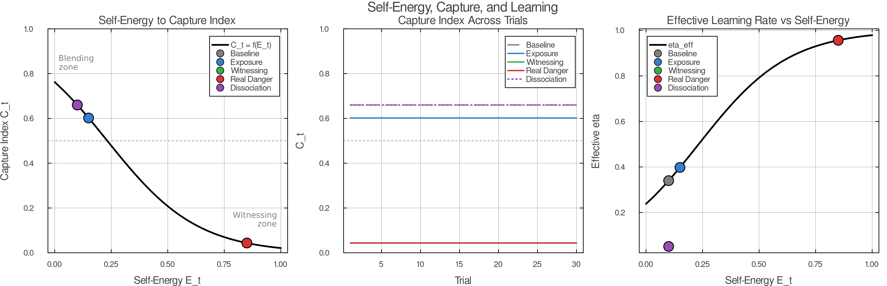
When Self-energy is low and a part activates, the part’s high-precision priors dominate inference. Its beliefs about self-state (“I am small”), world-state (“this is dangerous”), policy (“I must avoid”), and expected outcome (“avoidance keeps me safe”) organize ongoing inference and action selection. Present-context evidence — the therapist’s voice, the safety of the room, the fact of inhabiting an adult body — goes functionally offline. The sensory channels remain intact, but the part’s precision so outweighs context precision that incoming signals exert little influence on inference.
This is what IFS clinicians call blending. Phenomenologically, blending is the difference between having a feeling and being organized by it. The part’s beliefs do not present as beliefs; they present as reality. “I am afraid” is not a report about an internal state; it is the only available description of the world.
Formally, blending corresponds to the regime where the capture index
$$C_t = \frac{\pi_{\text{part}}^{\text{eff}}}{\pi_{\text{part}}^{\text{eff}} + \lambda_{\text{ctx}}^{\text{eff}}}$$
approaches 1. Here πparteff = rt ⋅ πpart ⋅ e−βEt is the effective precision of the active part bundle, modulated by activation strength rt and Self-energy Et, while λctxeff = λctx ⋅ e+γEt is the effective precision on present-context evidence. When Et is low, both exponential terms are near 1, and the part’s high base precision πpart overwhelms context.
Blending is not all-or-none. The capture index is continuous, and the degree of blending varies with the strength of activation, the rigidity of the part’s priors, and the momentary level of Self-energy. Clinically, there are thresholds that matter — particularly whether the system retains enough context precision to sustain dual awareness, the capacity to register both the part’s perspective and the present situation simultaneously. Below that threshold, the part’s beliefs function as identity rather than content. Above it, they can begin to be held as object.
Blending is also self-reinforcing: once a part captures inference, its predictions bias sampling and interpretation in ways that appear to confirm the part’s own model. The world looks dangerous because the system is sampling through a danger filter, and the apparent confirmation increases precision on the danger prior further. Breaking this cycle typically requires some form of external perturbation — a therapist’s question, a shift in bodily state, a moment of unexpected safety that the part’s filter cannot entirely suppress.
Consider the same part activating under high Self-energy. The bundle still fires and heart rate still rises. The learned associations between cue and threat come online. But this time, present-context evidence remains strongly weighted: the room is safe, the therapist is present, and the body is adult rather than six years old.
The same activation now produces a different inferential regime. The capture index Ct stays well below 1, not because the part is less active — rt may be equally high — but because Self-energy has shifted the precision balance. The exponential scaling e−βEt reduces the effective dominance of the part’s priors, while e+γEt amplifies the weight of context evidence. The part’s beliefs are now active contributors to inference, not its sole determinants.
This is witnessing. Phenomenologically, it is “a part of me is afraid” — the same activation, held in a different relation. The fear is present, perhaps intensely so, yet it is present to an observing subject rather than constituting the whole subject.
Witnessing is formally distinct from distraction or dissociation because the part remains active. The system has not suppressed activation or numbed context; it has altered the inferential regime in which activation occurs. The part’s priors are live — generating predictions, producing prediction errors, and competing for influence on policy selection — but they are competing in a regime where context evidence has enough weight to prevent capture. That distinction matters because only active priors confronted by intact context can be revised.
This distinction matters because it explains why not all forms of “calming down” are therapeutically equivalent. A person who distracts themselves from a triggered part (watches television, changes the subject, intellectualizes) may reduce the capture index to near zero — but they do so by reducing rt, not by maintaining activation under high Self-energy. The part’s priors go dormant. Nothing is live to revise. A person who dissociates may appear calm, but dissociation achieves its quiet by reducing precision on sensory evidence (λctx drops), not by maintaining context. The part may remain partially active, but context is offline, so the conditions for revision are not met.
Witnessing is the specific configuration in which activation stays high and context stays online. It is the only regime that satisfies both conditions for durable revision simultaneously.
The relationship between blending and witnessing can be clarified by a simple matrix crossing two continuous dimensions: the activation strength of a part (rt) and the degree of Self-energy (Et).
| Low Self-energy (Et) | High Self-energy (Et) | |
|---|---|---|
| Low part activation | Baseline / ordinary cognition | Presence / Self |
| High part activation | Blending | Witnessing (therapeutic zone) |
The lower-left cell is familiar: a triggered part dominates, and the person is blended. The upper-right cell is also recognizable: no part is strongly active, and the person is in a Self-led state — open, curious, grounded. The upper-left is ordinary life: no particular part activated, no particular depth of presence.
The therapeutic zone is the lower-right: high part activation co-occurring with high Self-energy. This is the cell that IFS therapy specifically targets. It requires the clinician to help the client activate a part — invite it forward, ask about it, explore its beliefs — while simultaneously maintaining enough Self-energy that the activation does not become capture. The therapist’s regulated presence often scaffolds this balance, supplying external support for Self-energy (ut in the simulation) until the client’s own capacity stabilizes.
The matrix makes visible why therapy is difficult: the therapeutic cell requires simultaneous conditions that naturally oppose each other. Part activation tends to reduce Self-energy (the fear itself is dysregulating), while high Self-energy tends to keep parts from activating fully (the system is less reactive). Skilled therapeutic work navigates this tension, titrating activation to stay in the witnessing zone without tipping into blending.
In practice, clinicians assess the shift from blending to witnessing not by measuring activation levels or Self-energy directly but by observing the quality of the client’s relationship to the activated part. The canonical IFS probe is: “How do you feel toward this part?”
If the client responds with the part’s own affect — “I’m terrified,” “I hate it,” “I need to get away” — the system is likely blended. The part’s beliefs are operating as identity, and the response comes from inside the part’s inferential regime.
If the client responds with one of the qualities associated with Self — curiosity, compassion, openness, calm interest — the system is likely witnessing. The part is active, but the response comes from outside the part’s capture. The client can relate to the part rather than as the part.
The probe can be read as a real-time assay of the capture index. Responses marked by curiosity, compassion, or calm suggest Ct is low enough that context-informed inference is generating the relational stance. Responses that speak from the part itself — “I’m terrified,” “I need to get away” — suggest Ct is high enough that the part’s own priors are producing the reply. The probe does not measure activation; it measures the relationship to activation, which is precisely the variable the model identifies as decisive.
In IFS, the central therapeutic question is not whether a part activates. Activation is necessary — without it, there is nothing live to revise. The question is whether activation unfolds under capture or in context.
Under capture, the part may activate thousands of times across a person’s life, each time producing the same fear, the same avoidance, the same self-assessment — and each time confirming its own predictions within its own closed loop. Present reality has been functionally excluded from inference; the system cannot register the mismatch between the part’s outdated priors and current conditions.
Under context, the same activation becomes an opportunity for revision. The mismatch between “I am six and helpless” and “I am thirty and sitting in a safe room” is computationally available. The conditions for updating are met.
This is the answer to the first half of the paper’s central question: what determines whether a part takes over or can be held in context? Self-energy largely determines which regime obtains, and thus whether activation will merely repeat a prior or expose it to revision. The next section addresses the second half: why only the witnessing regime permits lasting change.
The previous section established that Self-energy determines whether part activation becomes capture or context-held awareness. This section addresses the deeper question: why does only the witnessing regime produce durable revision of the part’s outdated beliefs?
Durable change requires three conditions to hold simultaneously:
The part must be active. Its priors must be live — generating predictions, influencing inference, producing the phenomenology of the original experience. Without activation, there is nothing to revise. The target beliefs are dormant, and no amount of safety or insight can reach them.
Present-context evidence must be online. The system must have access to information that contradicts the part’s outdated priors — the fact of being adult, the safety of the current environment, the availability of resources the original situation lacked. Without context, there is nothing to revise with.
Self-energy must be high enough to prevent capture. The part’s activation must not dominate inference to the point where context is excluded. If the part captures the system, conditions 1 and 2 cannot coexist: the part is active, but context has been functionally excluded.
Each condition alone is insufficient. Conditions 1 and 2 without condition 3 produce blending — the part is active and context nominally exists, but the part’s precision overwhelms context. Condition 2 without condition 1 produces ordinary calm — the person feels safe but the part’s priors are not engaged and cannot be updated. Conditions 1 and 3 without condition 2 would require activation under high Self-energy in the absence of corrective evidence — a theoretically possible but clinically unusual configuration.
Witnessing is the regime in which all three conditions are satisfied. It is not a technique but an inferential configuration: the part’s priors are active and generating predictions, context evidence is weighted heavily enough to produce prediction errors against those priors, and Self-energy prevents the part from suppressing the resulting mismatch signal.
Under blending, the part’s priors dominate inference so thoroughly that contradicting evidence cannot gain computational traction. The prediction error that would ordinarily drive updating — “your prior says danger, but the evidence says safety” — is attenuated by the precision imbalance. The part’s model is internally consistent: it predicts danger, samples for danger cues, finds what looks like danger (through the filter of its own expectations), and confirms its own predictions. The system is trapped in what amounts to a local minimum of free energy — a stable configuration that resists perturbation because the part’s high precision means the cost of revising its beliefs exceeds the cost of discounting the evidence.
This is why a part can activate thousands of times across a lifetime without updating. Each activation occurs under the same precision regime that formed the part in the first place. The experience of being triggered is familiar precisely because nothing new is being learned.
A person can be entirely calm, grounded, and Self-led — high Et, low rt — and yet the part’s outdated beliefs remain untouched. The priors are dormant. They are not generating predictions, not producing prediction errors, not competing with context. The system is in the upper-right cell of the 2x2 matrix: presence without therapeutic engagement.
This is why insight alone rarely produces lasting change. A person may understand intellectually that their fear of dogs is outdated, that they are no longer six years old, that the original danger has passed. This understanding exists in context, but it does not reach the part because the part is not active. The understanding and the outdated belief occupy different inferential regimes and never meet.
IFS therapy is distinctive precisely because it deliberately activates the part — invites it forward, asks about its beliefs, engages its phenomenology — while maintaining the Self-energy needed to prevent that activation from becoming capture. The therapeutic action is not activation alone (that happens in every triggering event) and not calm alone (that happens in meditation), but their co-occurrence under conditions of non-capture.
In IFS clinical language, the durable change that occurs under witnessing is called unburdening. The present model interprets unburdening as revision of the part’s upstream priors — specifically, the self-state and world-state beliefs that sit at the top of the part’s causal chain.
A part bundles priors in a causal sequence: self-state (“I am six and helpless”) conditions capability assessment (“I cannot protect myself”), which conditions threat meaning (“this is dangerous to me”), which conditions policy (“I must avoid”). Under the H1 model proposed in this paper, witnessing revises the upstream priors first. The system infers “I am adult and capable,” and that revision cascades downstream: the threat becomes reassessable, and avoidance is no longer the only viable policy.
This causal ordering explains a clinical observation that is otherwise puzzling: why does IFS unburdening often feel sudden? The part has been carrying the same beliefs for years or decades, and then in a single session — sometimes in a single moment — the beliefs shift. The model suggests this is not sudden learning from accumulated evidence but a threshold effect: once the upstream prior (self-state) revises under witnessing, the downstream beliefs that depended on it are no longer supported and can update rapidly.
The model predicts that revision can be partial. If activation is present and context is online but the witnessing window is brief or unstable — if Self-energy fluctuates, or the client slips in and out of blending — upstream priors may soften without fully revising. The part’s beliefs become less rigid, less dominant, but not yet fully updated.
Clinically, this corresponds to burdens that lighten without fully releasing. The client reports that the fear is “less intense” or “further away” but not gone. The part still activates in response to the old cues, but with lower precision and less capture. In IFS practice, the repeated question “Is there more?” reflects this possibility: full unburdening may require sustained or repeated witnessing, not a single brief contact.
Formally, partial revision occurs when the prediction errors generated during witnessing are sufficient to reduce the concentration parameters of the part’s Dirichlet priors but not to shift their modes. The beliefs soften — become less certain — without yet converging on the new context-consistent values. This intermediate state is neither the original rigid bundle nor a fully revised one, and it predicts a characteristic clinical trajectory: gradual loosening across sessions, punctuated by moments of deeper revision when witnessing is sustained.
The distinction between witnessing and exposure therapy is not that one works and the other does not. Exposure therapy produces real clinical gains. The model’s claim is that the mechanisms differ, and the differences explain observed patterns in speed, depth, and generalization of change.
In exposure therapy, the client confronts the feared stimulus under conditions of activation. Context evidence is present — the therapy room is safe, the exposure is controlled — but Self-energy is not specifically elevated. The client is activated and in contact with corrective evidence, but the part’s priors may retain high effective precision. Learning occurs, but it occurs primarily at the level of threat meaning: the specific stimulus is reclassified from dangerous to safe. Self-state priors (“I am helpless”) may shift weakly or not at all.
Under witnessing, the same corrective evidence is available, but Self-energy shifts the precision balance. The part’s priors lose effective dominance, allowing evidence to reach upstream beliefs — including self-state. Because self-state is upstream of threat meaning in the H1 model, revising “I am helpless” to “I am capable” cascades to threat reassessment more broadly than revising a single stimulus-threat association.
This predicts that witnessing should produce broader generalization than exposure. Exposure retrains “this dog is safe”; witnessing retrains “I am someone who can handle dogs.” The first is stimulus-specific; the second transfers to novel stimuli that share the underlying self-state prior.
In IFS clinical work, parts are not encountered in isolation. Before a client can access an exile — a part carrying the original wound — they typically encounter protectors: parts whose function is to prevent the exile’s activation from destabilizing the system.
The present model formalizes protectors minimally, as policy priors combined with access-control tendencies. A protector is a learned pattern that biases action selection toward avoidance, distraction, numbing, or preemptive management whenever cues approach the exile’s activation threshold. In the model’s terms, a protector increases the prior probability of policies that reduce rt — keeping the exile’s activation low and thereby preventing blending.
This is locally rational behavior. If exile takeover has repeatedly been overwhelming — if blending with the exile produces intolerable distress, functional impairment, or further traumatization — then cautious gatekeeping is not pathology from the protector’s point of view. It is optimized prevention, given the system’s history and the system’s assessment of available Self-energy.
IFS distinguishes two classes of protectors. Managers operate proactively, planning trajectories through state space that avoid exile-activating regions. They maintain control, anticipate threats, and organize daily life to minimize triggering. In active inference terms, managers are policy priors with high temporal depth — they plan ahead to keep the system away from dangerous states.
Firefighters operate reactively. When a trigger slips through the manager’s defenses and the exile begins to activate, firefighters rapidly minimize acute distress through impulsive action: substance use, dissociation, rage, binge eating, self-harm. In the model’s terms, firefighters are policy priors with low temporal depth — they minimize immediate free energy without regard for long-term consequences.
The present model formalizes only the minimum protector function: preventing destabilizing takeover. It does not yet model the full clinical richness of protectors, including trust assessment, conditional permission, role transformation after unburdening, and the distinct strategic styles that differentiate manager and firefighter configurations.
In clinical practice, protectors are not merely policies to be overridden. They have their own trust conditions: a protector may step back only when it assesses that Self-energy is sufficient, that the therapeutic context is safe, and that the exile’s activation will not overwhelm the system. This trust assessment is a sophisticated computation that the current model represents only implicitly, through the dependence of the capture index on Self-energy. A more complete model would formalize protector trust as an explicit variable conditioning the gate on exile access.
The model presented so far addresses single-part dynamics: one part activating, blending or witnessing, and potentially revising. Clinical systems are rarely so simple. One of the most recognizable phenomena in IFS practice is polarization: the experience of being pulled in opposite directions by competing parts.
Polarization occurs when two or more part-bundles assign high expected danger to each other’s preferred policies. Consider a system with two activated parts:
Each part treats the other’s preferred action as dangerous. When Part A gains influence and the system begins to approach, Part B’s threat estimate rises, increasing its activation and pulling the system back. When Part B dominates and the system withdraws, Part A’s threat estimate rises — loneliness and disconnection feel intolerable — and pulls the system forward again.
Under low Self-energy, this mutual threat modeling produces a characteristic phenomenology:
Higher Self-energy dampens polarization dynamics. When Et is elevated, neither part can fully capture inference. Both perspectives remain active without either dominating. The system can hold “I want connection” and “I need to protect myself” simultaneously, as objects of awareness rather than competing identities.
This is the precondition for what IFS clinicians call negotiation or de-polarization: the emergence of policies that honor both parts’ concerns. In the model’s terms, high Self-energy reduces the effective precision of both part-bundles, increasing policy entropy and allowing mixed or negotiated actions to emerge.
Although the appendix formalizes polarization as a two-bundle system, clinical systems often contain larger polarization networks in which multiple protectors and exiles mutually recruit one another across several steps. The two-bundle model captures the core mechanism; extending it to multi-part networks is a direction for future work.
The main text provides the mechanistic account; Appendix B provides the companion simulation.
The simulation tests the paper’s central claim in a minimal case: the same part activates under different levels of Self-energy, yielding either blending or witnessing. The question is whether only the witnessing regime produces durable updating of the part’s outdated priors.
A secondary purpose is to compare two causal structures:
The simulation is designed so that the comparison between conditions is fair:
The simulation uses a discrete POMDP with three hidden factors:
Four observation modalities:
Three policies: πavoid (fast disengagement), πinspect (approach and sample), πstay (maintain contact).
The part bundle is represented as strong priors on s = child_helpless, m = danger, and πavoid.
Self-energy Et ∈ [0, 1] modulates effective precisions:
πparteff = rt ⋅ πpart ⋅ e−βEt λctxeff = λctx ⋅ e+γEt
An optional external support parameter ut allows Self-energy dynamics:
Et + 1 = clip(Et + ut + αWt − β′Bt, 0, 1)
where Wt indexes successful witnessing episodes and Bt indexes blending episodes, capturing the clinical observation that successful witnessing strengthens Self-energy while blending episodes can erode it.
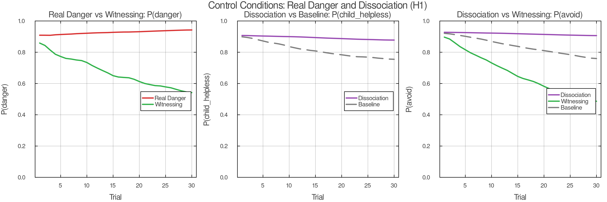
Five conditions test the model’s predictions:
Condition 1 (Baseline): Safe world, ambiguous cue, low Et, free policy selection. Predicted: high capture, high avoidance, minimal updating.
Condition 2 (Exposure): Same safe world and ambiguous cue. Et held low (same as baseline). Policy constrained to inspect/stay — forced contact with the stimulus. Predicted: some threat updating, weaker self-state revision, slower and narrower change.
Condition 3 (Witnessing): Same safe world, ambiguous cue, same forced contact as exposure. Et elevated. Predicted: same activation, different relationship; part held in context; earlier self-state revision; downstream threat revision; broader generalization.
Condition 4 (Real-danger control): Dangerous world, Et elevated. Predicted: adaptive fear remains. The model does not predict indiscriminate calm.
Condition 5 (Dissociation control): Safe world, part activation present, low Et, reduced context-evidence precision. Predicted: disturbance may drop, but durable updating remains poor. Distinguishes witnessing from numbed disengagement.
Under H1 (self-state-upstream): octx primarily informs s; s strongly conditions m; m conditions policy. Witnessing should produce: P(s = adult_capable) rises first, P(m = safe) follows, P(avoid) falls last.
Under H2 (threat-primary): oext and oint primarily inform m; m then influences s. Exposure and witnessing should look more similar; the generalization advantage of witnessing should shrink.
This section states the model’s predicted signatures. Final simulation results will determine whether these predictions are confirmed.
For matched part activation rt across conditions, low Self-energy should produce blending-like capture (high Ct, avoidant policy, minimal revision) while high Self-energy should produce witnessing-like context holding (low Ct, exploratory policy, active revision). The capture index provides a direct phenomenological readout: Ct > θhigh corresponds to “I am afraid”; Ct < θlow with rt still elevated corresponds to “a part of me is afraid.”
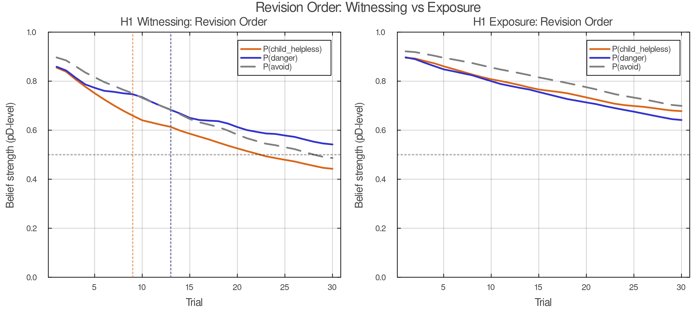
Under witnessing in the H1 model, revision should follow a temporal ordering:
This ordering is a strong prediction of the self-state-upstream hypothesis. It corresponds to the clinical observation that protectors relax downstream of upstream revision — the system stops avoiding not because it has been convinced that this particular stimulus is safe, but because it no longer experiences itself as helpless in the face of threat.
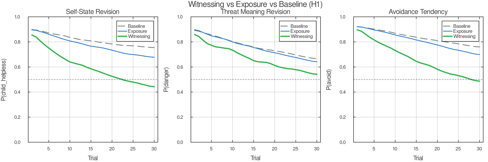
Exposure (Condition 2) should show slower or weaker self-state revision compared to witnessing (Condition 3), despite equivalent stimulus contact. Threat meaning may update under exposure, but the change should be narrower: specific to the trained stimulus rather than generalizing to novel ambiguous-safe cues.
Witnessing should produce broader generalization to novel ambiguous-safe cues than exposure. This follows from the H1 causal structure: witnessing revises the upstream self-state prior, which cascades to threat assessment across stimuli, while exposure revises specific stimulus-threat associations.
Under Condition 4, the model must preserve adaptive fear. Elevated Self-energy should not flatten all threat responses. When the world is actually dangerous, the system should correctly infer danger and select protective policies. Witnessing enables discrimination, not suppression.
Under witnessing in the H1 model, policy change should lag self-state change. Specifically, P(avoid) should begin to decrease only after P(s = adult_capable) has risen appreciably. This temporal ordering is a distinctive prediction that differentiates the model from accounts in which policy change and belief change are contemporaneous.
Under brief or unstable witnessing windows — where Et is elevated only transiently — upstream priors should soften without fully revising. The concentration parameters of the Dirichlet priors should decrease (beliefs become less certain) without the mode shifting to context-consistent values. This corresponds to the clinical observation of partial unburdening.
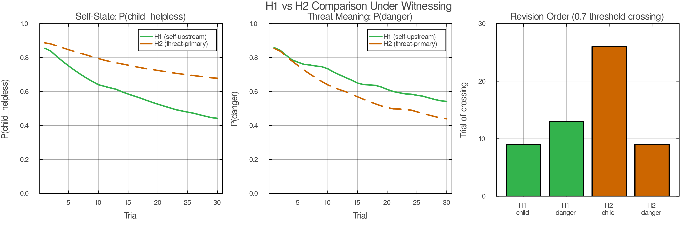
H1 should fit the resulting trajectories better than H2. Specifically, H1 should produce: (a) earlier self-state revision under witnessing, (b) a stronger generalization advantage, and (c) a temporal ordering in which self-state change precedes threat meaning change. If H2 fits equally well, the self-state-upstream hypothesis is weakened.
The proposed account is weakened if:
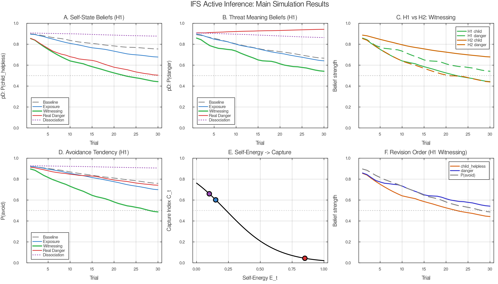
This paper argues that the central IFS question — whether a part takes over or is held in context — can be formalized as a precision balance between part priors and present-context evidence, governed by Self-energy. The model makes specific, testable predictions about the conditions under which change occurs, the order in which beliefs revise, and the breadth of generalization.
The model counts as an IFS model despite being minimal — addressing single-part dynamics in a single-agent system — because it captures the core IFS distinction: the difference between being a part’s beliefs and being with a part’s beliefs. That distinction, formalized through the capture index, is what makes IFS therapeutically distinctive. The phenomenological difference between “I am afraid” and “a part of me is afraid” corresponds to a formal difference in precision regimes, and the therapeutic consequence — that only the second permits lasting change — follows from the model’s structure.
Exposure-based accounts focus on activation and corrective evidence. The present model agrees that both are necessary but argues that a third variable — Self-energy — determines whether corrective evidence can reach the beliefs that matter. Exposure revises stimulus-threat associations; witnessing revises the upstream self-state beliefs that generate threat assessments across stimuli.
Schema-based accounts (including Chamberlin’s coherence therapy model) identify modular or isolated belief structures as the target of change. The present model agrees with the identification but proposes a different mechanism of isolation: functional disconnection through extreme prior precision rather than structural disconnection through missing graph edges. This is not merely a notational preference; it generates different predictions. Functional isolation predicts slow updating under repeated safe exposure; structural isolation predicts near-zero updating until reconnection. The clinical evidence suggests both patterns exist, with functional isolation characterizing the more common presentation.
Self-energy differs from ordinary safety or calm. Many therapeutic approaches emphasize safety, and safety is important. But safety alone does not predict the model’s core phenomenon: that the same activation under the same external conditions can produce either blending or witnessing, depending on an internal variable. Self-energy is composite — involving both autonomic-social regulation and metacognitive depth — and it is this composite character that distinguishes it from simple arousal reduction.
The model has several deliberate limitations that constrain its scope:
The therapist is absent from the model. The model describes individual-level dynamics in what is, clinically, a deeply relational process. Early in treatment, the therapist’s Self-energy often supplies the stability that the client cannot yet maintain alone. The present model captures a minimal intra-agent mechanism but not the full dyadic therapeutic field. The external support parameter ut in the simulation is a placeholder for what is, in practice, a rich interpersonal process.
Self-like parts are not distinguished from genuine Self. The model does not yet distinguish genuine witnessing from self-like managerial imitation of witnessing. This is one of the most important unresolved problems for a computational account of IFS, because apparent metacognitive fluency is not always equivalent to genuine Self-ledness. A self-like part may produce verbal reports of curiosity and compassion while the underlying precision regime remains part-dominated. Distinguishing these states computationally is a major target for future work.
Protector dynamics are simplified. The model formalizes only the minimum gatekeeping function of protectors. The full clinical richness — trust assessment, conditional permission, role transformation, distinct manager and firefighter strategies — awaits a more complete multi-part model.
The model operates at the algorithmic level. No claims are made about neural implementation. The mapping from precision regimes to specific neural circuits — likely involving prefrontal-limbic interactions, vagal tone, and interoceptive processing networks — is a separate research program.
Several directions emerge naturally from the model’s current limitations:
Therapist as second agent. Modeling the therapeutic relationship as a two-agent system in which the therapist’s generative model interacts with the client’s, providing external scaffolding for Self-energy.
Self-like parts. Formalizing the distinction between genuine witnessing (high V + high M) and pseudo-witnessing (high M alone, or high verbal reflection without embodied regulation). This may require separating the components of Self-energy in the simulation rather than using a scalar proxy.
Multi-part parliament models. Extending from single-part and two-part dynamics to the full clinical complexity of multiple interacting parts with heterogeneous roles.
Empirical validation. The model’s predictions — especially the temporal ordering of revision and the generalization advantage of witnessing over exposure — are testable with existing clinical and neuroimaging methods.
Can a part-like bundle form under overwhelm and low control without invoking literal structural rewiring?
The simulation uses the same hidden variables as the main model: context (c), self-state (s), and threat meaning (m). The agent begins with relatively flat priors and low Self-energy.
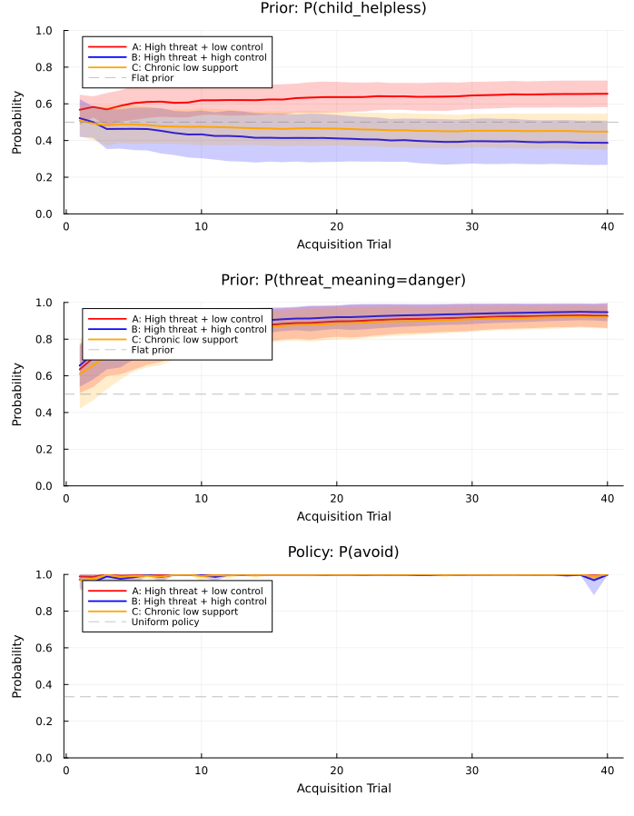
The agent is exposed to repeated episodes with dangerous context, ambiguous or threat-weighted cues, low support, and low controllability. Avoidance succeeds in short-term error reduction; inspect and stay policies fail or produce costly outcomes. Across episodes, the agent’s priors on s = child_helpless, m = danger, and πavoid should strengthen through Dirichlet learning.
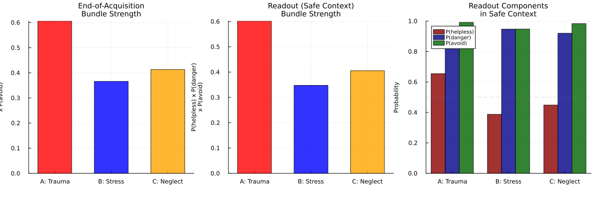
The simulation compares at least two conditions:
Condition A (high threat + low control): Classic acute trauma formation. The agent has little influence over outcomes; avoidance is the only reliably cost-reducing policy.
Condition B (high threat + high control): Frightening but manageable. The agent can select inspect or stay and receive neutral or positive outcomes. This condition should be distressing but not part-forming.
Condition C (optional — moderate chronic threat + chronic low support): Neglect-like formation. Lower acute threat but sustained low control and absence of support. Formation may be slower but should still occur.
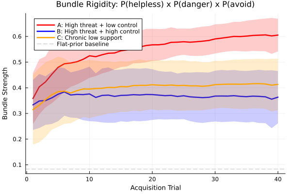
Formation depends more strongly on low control under threat than on threat alone. Condition A should produce rigid bundles; Condition B should not; Condition C (if included) should produce bundles with different characteristics — slower formation, potentially different rigidity profiles.
The model also predicts that degree of helplessness should scale bundle rigidity: more severe low-control conditions produce more treatment-resistant prior bundles.
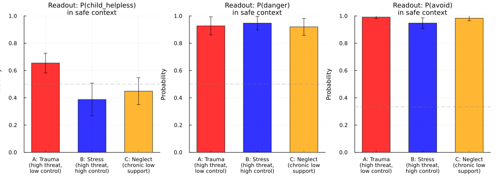
After acquisition, the agent is placed in a safe, ambiguous context. If formation occurred, the agent should infer helplessness too readily, infer danger too readily, and avoid despite safety — demonstrating that a part-like bundle has formed through precision-based learning without explicit structural rewiring.
How does the model explain multi-part polarization and its phenomenology, and how does Self-energy modulate the dynamics?
Introduce two part-bundles with opposing preferred policies:
Each bundle includes self-state, world-state, preferred policy, expected outcome, and — critically — a threat estimate about the other bundle’s policy.
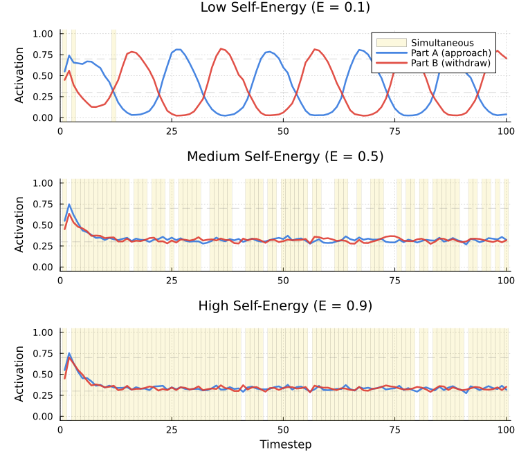
Under low Self-energy, mutual threat modeling produces anti-phase oscillation:
aA, t + 1 = σ(θA ⋅ cueA + κA ⋅ 𝟙[actionB, t] − ηEt) aB, t + 1 = σ(θB ⋅ cueB + κB ⋅ 𝟙[actionA, t] − ηEt)
where κA, κB > 0 encode mutual threat assessment and higher Et dampens takeover dynamics.
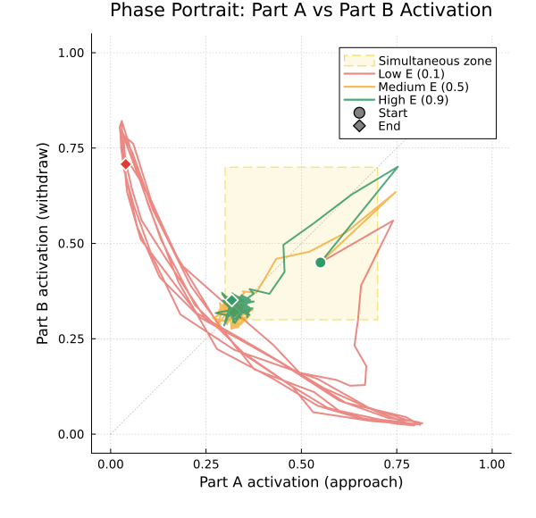
Low Self-energy: Rapid reversals, unstable commitments, “both feel true but not at the same time,” exhaustion from oscillation.
Higher Self-energy: Both bundles can be represented without either capturing inference. Oscillation dampens. Mixed or negotiated policies become available. The contradiction becomes observable rather than identity-level.
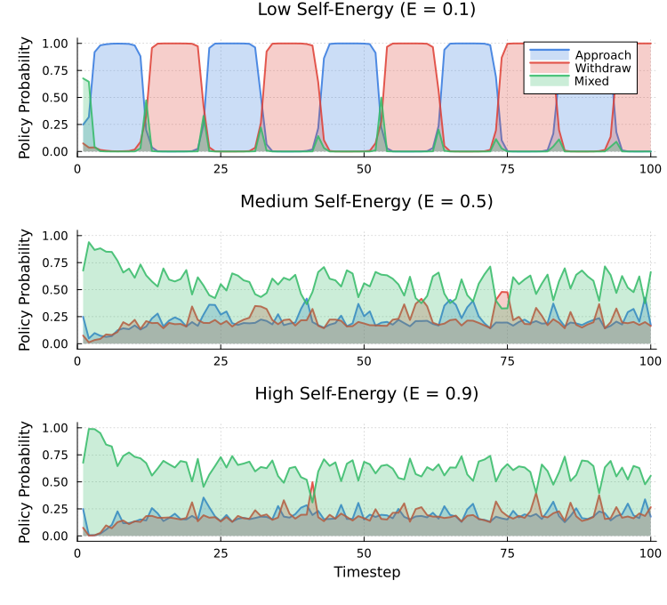
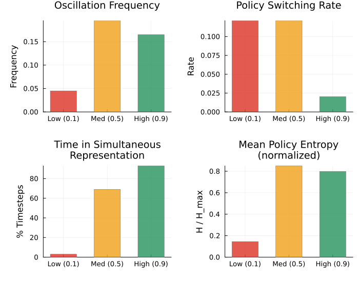
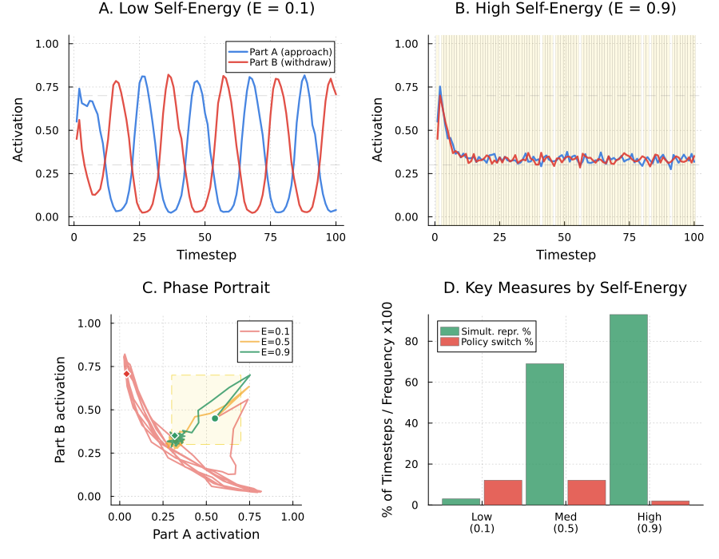
These last two measures are closest to clinical relevance: the transition from “stuck oscillation” to “both perspectives held, new possibility available.”
[TODO — to be compiled during final assembly]